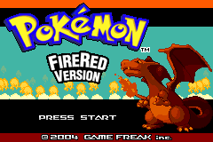

Pokemon - FireRed Version (USA, Europe)
Flash 1M Save Format Mapped (Family Spec) gbakit Built-In 📺 Joybus 💾 MultiBoot 🎮 4P Link 📡 Wireless
Cartridge Identity
- Game Code
BPRE(FamilyBPR)- Header Title
POKEMON FIRE- Maker / Revision
01/ rev0- ROM Size
- 16.0 MiB (16,777,216 B)
- Save Media
Flash 1M- SHA-256
3d0c79f1627022e18765766f6cb5ea067f6b5bf7dca115552189ad65a5c3a8ac- Engine / SDK Group
comm-016(22 families)
Screenshots


Niche & Rare Accessories
Detected niche/rare GBA accessory support: 🔌 Wireless Adapter (RFU_V1024).
Full 343-ROM corpus breakdown in the Cartridge Hardware & Niche Accessories Reference · auto-detected from ROM bytes via
gbakit inspect.
- Wireless Adapter (RFU_V1024)
- Nintendo Wireless Adapter (
AGB-015) SDKRFU_V1024+RFU-MBOOT
Link Cable & Multiplayer Communications
This title contains detected communication capabilities: 📺 Joybus 💾 MultiBoot 🎮 4P Link 📡 Wireless.
Detailed protocol specifications, SIO registers, Joybus commands, and MultiBoot sequences are documented in the Link & Multiplayer Reference.
- Multi-Player SIO (4P)
- 16-bit ring network · SIOCNT (
0x04000128) literals:0x009b20,0x00a41c,0x00b060· SIODATA32/SIOMULTI0 (0x04000120) literals:0x00b2e8,0x00b8c0,0x00b984 - GameCube Joybus
- Register literal
REG_JOY_TRANS(0x04000154) at offset0xd24a04 - GameCube Joybus
- Register literal
REG_JOYSTAT(0x04000158) at offset0x70daac - Nintendo Wireless Adapter
- AGB-015 RFU driver signature
RFU_V1024at offset0x6fc05c - Nintendo Wireless Adapter
- AGB-015 RFU driver signature
RFU-MBOOTat offset0x6fc068 - Nintendo Wireless Adapter
- AGB-015 RFU driver signature
NINTENDOSio32IDat offset0x6fc074 - Nintendo Wireless Adapter
- AGB-015 RFU driver signature
RFU WAITat offset0x43ec92 - Nintendo Wireless Adapter
- AGB-015 RFU driver signature
RFU BOOTat offset0x43eca1 - Nintendo Wireless Adapter
- AGB-015 RFU driver signature
RFU ERRORat offset0x43ecb0 - Nintendo Wireless Adapter
- AGB-015 RFU driver signature
RFU RESETat offset0x43ecbf - Nintendo Wireless Adapter
- AGB-015 RFU driver signature
RFU CONFIGat offset0x43ecce - Nintendo Wireless Adapter
- AGB-015 RFU driver signature
RFU STARTat offset0x43ecdd - Nintendo Wireless Adapter
- AGB-015 RFU driver signature
RFU STARTat offset0x43ed0a - Nintendo Wireless Adapter
- AGB-015 RFU driver signature
RFU SC POLLat offset0x43ecec - Nintendo Wireless Adapter
- AGB-015 RFU driver signature
RFU SP POLLat offset0x43ecfb - Nintendo Wireless Adapter
- AGB-015 RFU driver signature
RFU SEND ERRat offset0x43ed19 - Nintendo Wireless Adapter
- AGB-015 RFU driver signature
RFU CP POLLat offset0x43ed28 - Single-Cart MultiBoot
- Single-Cartridge MultiBoot (Download Play) client/server handler · Thumb SWI 0x25 (
0xDF25):0x1e3b76,0x40a158,0x43e314,0x44021e· SDK signatures:MBOOTat0x6fc06c
Battery Save Format Specification (Family Shared)
This release shares its save architecture with canonical family reference Pokemon - FireRed Version (USA, Europe) (Rev 1) (Family
BPR).
Open Family Save Format Spec (BPRE)Download save-format.json
- Canonical Specification
BPRE· 8 mapped fields · 1 verified checksum(s) · Confidence: HIGH- gbakit Built-In Support
- Built-in (BPRE)
gbakit save verify BPRE save.sav
gbakit save decode BPRE save.sav
gbakit save fix BPRE damaged.sav -o repaired.savROM Assets, Compression & Audio
- BIOS Compression
- LZ77 (
0x10): 2,159 streams · RLE (0x30): 0 streams - ROM Pointer Tables
- 295 tables (14 pointing to validated compressed streams)
- SDK Backup Tags
FLASH1M_V103
Text, Fonts & Scene Data
- Primary Text Encoding
- Game Freak Gen 3 custom 1-byte charmap (base 'A' = 0xBB) (
14ASCII strings ·41Shift-JIS runs ·5LZ77 ASCII blocks) - Font & VWF Indicators
- VWF Width Table 1bpp Font · BIOS SWIs: BitUnPack
0x10:1· LZ770x11/12:2· Huffman0x13:0· RLE0x14/15:0 - Scene & Packaging
114ROM pointer tables (≥32 entries,19≥200) ·21relativeu32TOCs ·94OAM metasprite hits
Hardware MMIO Subsystems
ppu_display0x80009c0,0x8000a38
Regional Variants & Revisions (Family BPR)
- Pocket Monsters - FireRed (Japan) (
BPRJ, 16 MiB) - Pocket Monsters - FireRed (Japan) (Rev 1) (
BPRJ, 16 MiB) - Pokemon - Edicion Rojo Fuego (Spain) (
BPRS, 16 MiB) - Pokemon - Feuerrote Edition (Germany) (
BPRD, 16 MiB) - Pokemon - FireRed Version (USA, Europe) (Rev 1) (
BPRE, 16 MiB) - Pokemon - Version Rouge Feu (France) (
BPRF, 16 MiB) - Pokemon - Versione Rosso Fuoco (Italy) (
BPRI, 16 MiB)